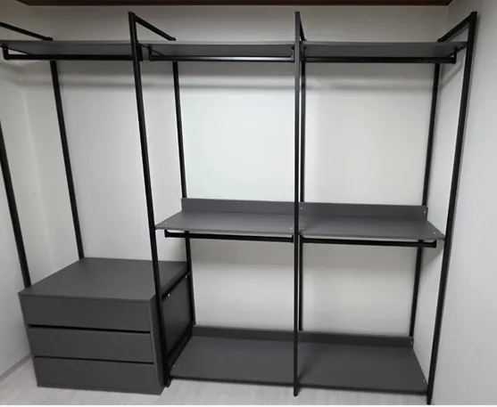

Used
중고 시스템행거
설치
중고로 산 행거, 우리 집에 맞게 세우는 것까지 맡기세요.
중고로 시스템행거를 사면 판매자가 분해해 둔 부품을 받아 오는 경우가 많습니다. 원래 집의 배치와 우리 집 구조가 다르고, 어떤 부품이 몇 개 있는지 정확히 모르는 채로 가져오게 됩니다.
코니처는 받아 오신 부품을 확인해 우리 집 공간에서 가능한 구성을 찾고 설치합니다. 구입 전에 판매 글 사진을 보내주시면 우리 집에 맞을지 미리 살펴볼 수도 있습니다.

Situations
중고 행거 설치가 필요한 경우
판매자가 분해해 준 경우
부품을 맞춰 보고 빠진 것이 없는지 먼저 확인합니다.
설치된 채로 사는 경우
판매자 집에서 해체하고 우리 집에서 설치하는 순서로 진행할 수 있습니다.
구입 전 맞을지 궁금할 때
판매 글 사진과 우리 집 치수로 미리 살펴봅니다.
원래보다 작게 쓰고 싶을 때
우리 집에 필요한 칸만 골라 설치합니다.
Checklist
중고 구입 전 판매자에게 확인할 것
| 항목 | 판매자에게 물어볼 것 | 이유 |
|---|---|---|
| 전체 사진 | 설치된 상태의 정면 사진 | 구성을 파악합니다 |
| 치수 | 전체 폭과 높이 | 우리 집에 들어가는지 봅니다 |
| 연결 부품 | 나사·브래킷 포함 여부 | 조립에 꼭 필요합니다 |
| 상태 | 휜 폴, 깨진 선반 여부 | 다시 쓸 수 있는지 봅니다 |
| 해체 여부 | 분해해서 주는지 | 해체 작업이 필요한지 정합니다 |
Process
중고 행거 설치 순서
판매 글 확인
판매 글 사진과 우리 집 치수를 함께 봅니다.
해체·운반 계획
설치된 채로 산다면 판매자 집 해체 일정을 정합니다.
부품 확인
받아 온 부품을 칸별로 맞춰 봅니다.
설치
우리 집 공간에 맞는 구성으로 세웁니다.
점검
연결부 흔들림과 수평을 확인합니다.
FAQ
자주 묻는 질문
판매자 집에서 해체도 해 주나요?
네, 판매자 집에서 해체하고 우리 집에서 설치하는 이전설치로 진행할 수 있습니다. 두 곳의 주소를 알려주세요.
부품이 모자라면요?
어떤 부품이 빠졌는지 확인해 알려드립니다. 빠진 부품에 따라 구성을 줄여 설치하는 방법도 있습니다.
브랜드를 모르는 중고 제품도 되나요?
네, 사진으로 구조를 보면 설치 방법을 판단할 수 있습니다.
중고라서 흔들리지 않을까요?
연결부와 수평을 다시 맞춰 설치하고, 옷을 걸었을 때 흔들림이 없는지 확인합니다.
구입 전에 봐 줄 수 있나요?
판매 글 사진과 우리 집 치수를 보내주시면 맞을지 살펴봐 드립니다.